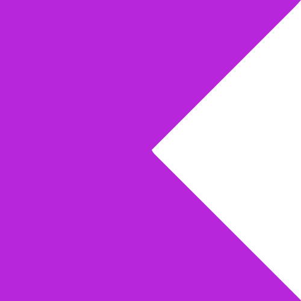
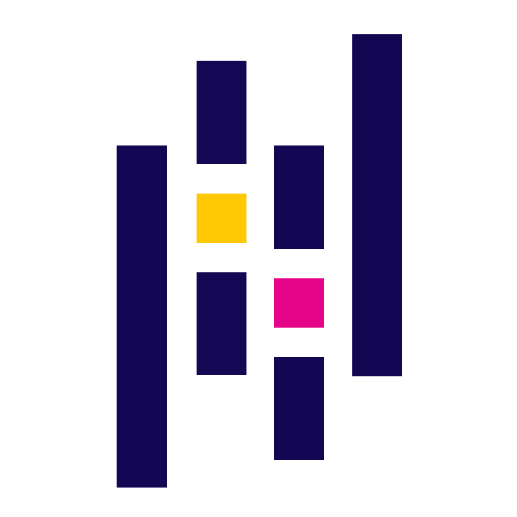
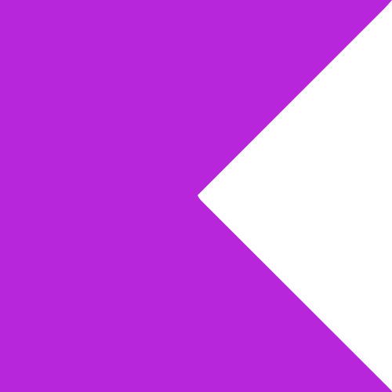
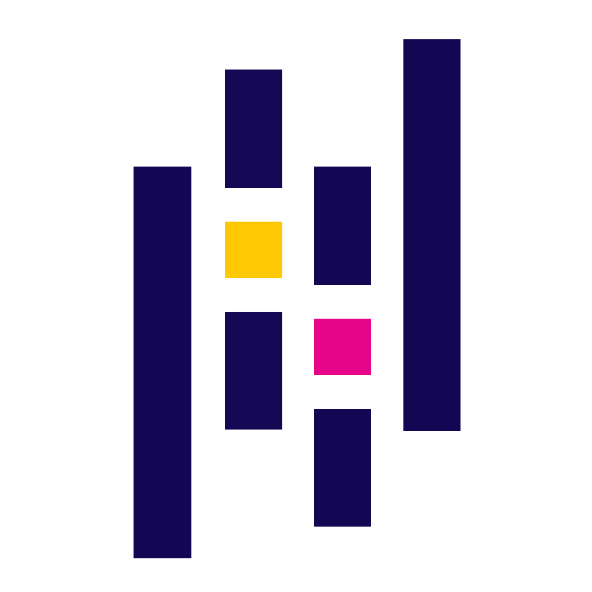

Habilidades
Kotlin
Flutter

Dart

Android Studio

Android SDK

Python

Pandas
Matplotlib

GitHub
Firebase
AWS
HTML5
CSS3
JavaScript
VBA
Olá, eu sou o
Sou o Kalleb Sousa, formado em Técnico em Informática e atualmente estudante de Análise e Desenvolvimento de Sistemas e Desenvolvimento Mobile. Apaixonado por tecnologia, dados e boas ideias, estou construindo minha carreira com foco no desenvolvimento de aplicativos Android nativos usando Kotlin e Android Studio, com experiência em Room, Firebase e atualmente aprofundando meus conhecimentos em AWS. Também tenho interesse em backend, buscando entender a integração de servidores, bancos de dados e APIs para criar soluções robustas e escaláveis para sistemas e aplicações.
Minha jornada também me levou a adquirir conhecimentos em HTML, CSS e JavaScript, que me ajudam a compreender a estrutura e a lógica por trás das interfaces de usuário, melhorando a experiência do usuário final. Além disso, sou apaixonado por análise de dados e automação utilizando Python, com bibliotecas como Pandas, Matplotlib e OpenPyXL, além de ferramentas como Excel avançado e Power BI, transformando números em decisões e gerando insights valiosos.
Durante essas trajetórias, desenvolvi habilidades interpessoais como comunicação eficaz, trabalho em equipe, liderança e gestão de projetos, sempre buscando colaborar de forma positiva e produtiva no ambiente de trabalho.
Sou movido por curiosidade, café e desafios grandes. Quando não estou codando, gosto de explorar dados, automatizar processos e criar soluções inovadoras que tornam a vida mais simples e eficiente. Trabalho de forma organizada, divido minhas tarefas em partes, e sempre uso o GitHub para acompanhar minha evolução.
Desenvolver, pra mim, é mais do que programar: é sobre resolver, criar e se divertir no processo.
Kotlin
Flutter
Dart
Android Studio
Android SDK
Python
Pandas
Matplotlib
GitHub
Firebase
AWS
HTML5
CSS3
JavaScript
VBA
O SmartView é um aplicativo mobile desenvolvido para permitir a visualização e análise de dados a partir de tabelas ou bancos de dados, trazendo informações importantes de forma rápida e interativa para dispositivos Android.
🚀 Funcionalidades:
✅ Visualização de Dados: Consulta de tabelas ou bancos de dados diretamente no app.
📊 Filtros e Pesquisa: Aplicação de filtros e buscas para encontrar informações rapidamente.
📈 Gráficos e Dashboards: Representação visual de dados para melhor interpretação.
💾 Integração com SQLite/Firebase: Sincronização e armazenamento local e remoto.
🔒 Segurança e Performance: Acesso seguro aos dados, garantindo eficiência e confiabilidade.
🛠️ Tecnologias Utilizadas:
Kotlin, Android Studio, XML, Firebase.
🎯 Objetivo:
Facilitar o acesso e análise de dados em dispositivos móveis, permitindo que usuários acompanhem informações importantes de maneira prática e eficiente, com interface intuitiva e recursos visuais de fácil compreensão.